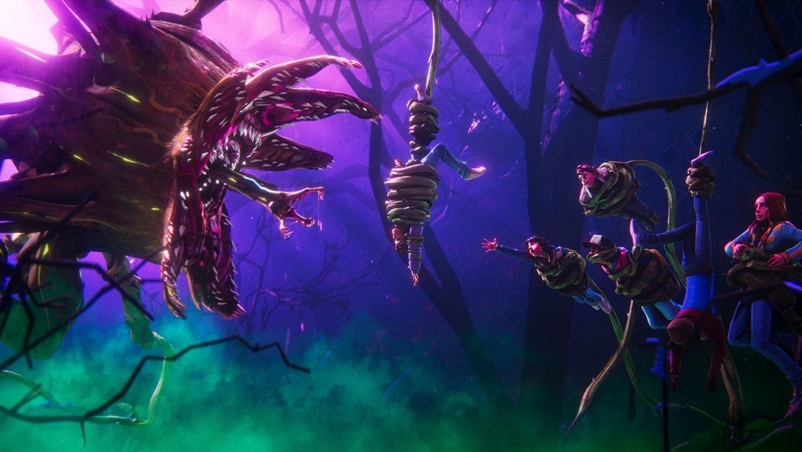

Netflix just announced a very early Christmas gift to fans by revealing the first look and voice cast of the animated series Stranger Things: Tales From '85, a spin-off to the award-winning series of the same name set to be released in 2026.
Stranger Things creators Matt and Ross Duffer said in the official announcement that creating an animated version was one of their “first ideas” when thinking about what else they could do with the series. “The idea was kind of to evoke a feeling of an '80s cartoon. With animation, there's really no limits. Eric and his team can just go wild,” the brothers said.
The animated series will take viewers back to the winter of 1985 in Hawkins, Indiana, where the cast uncovers a paranormal mystery and fights monsters living in the town. Showrunner and executive producer of the animated version, Eric Robles, said that the series will be filling some gaps between the storytelling of season 2 and season 3 of the live action.
“What we've been able to capture is the magic of Hawkins in a new way. Our story takes place between seasons 2 and 3, but we soon learn that nothing is quite as they thought it was.” he explained.
“Welcome back to Hawkins in the stark winter of 1985, where the original characters must fight new monsters and unravel a paranormal mystery terrorizing their town in ‘Stranger Things: Tales From ’85,’ an epic new animated series,” the official logline read.
Everyone was after the high-valued diamond, which Pike's character claimed to be her own but was actually stolen from its original descendant. By performing fascinating magic tricks as distractions and using realistic execution strategies, the main characters magically obtained the shining diamond.

To give the new series a feel of its own, the show introduced the voice actors for each character:
· Brooklyn Davey Norstedt as Eleven
· Jolie Hoang-Rappaport as Max
· Luca Diaz as Mike
· EJ Williams as Lucas
· Braxton Quinney as Dustin
· Ben Plessala as Will
· Brett Gipson as Hopper
The teaser showcases the show’s vibrant animation style, inspired by the look and feel of classic ’80s cartoons. Featuring a fresh voice cast and a bold creative direction, Stranger Things: Tales From ’85 aims to expand the beloved universe of Hawkins, blending nostalgia with brand-new mysteries waiting to be uncovered.